As HW perspective:
qubits.More Illustration for the Practical Definition
| Id | Part | Illustration |
|---|---|---|
| 1 | Programmable Physical System | still a hardware and instructions like classical computer.Classical computer uses transistors (HW), and sequence of logic gates (Program).Quantum computer: uses controlled quantum particles (ions, superconducting, circuits, photons) (HW), and sequence of quantum gates (Program). |
| 2 | Quantum states (Vectors in Hilbert space) | Instead of a bit being 0 or 1, a qubit is a vector (in Hilbert space): $|\psi\rangle = \begin{bmatrix} \alpha \\ \beta \end{bmatrix}$ For n qubits -> the vector has 2n, e.g., 2 qubits -> state looks like: $|\psi\rangle = \alpha_{00}|00\rangle + \alpha_{01}|01\rangle + \alpha_{10}|10\rangle + \alpha_{11}|11\rangle$ ; that's 4 amplitudes at once. |
| 3 | Manipulates using unitary operations | A unitary operation is a special matrix that: 1.Rotate the state vector, 2.preserve total probability. |
| 4 | Influence measurement probabilities | Measurements gives: {probability of 0 = $|\alpha|^2$, probability of 1 = $|\beta|^2$}Quantum algorithms are designed to: 1.Rotate the vector, 2.increase amplitude in the correct answers, 3.decrease amplitude in the wrong answers.So when you measure, you are more likely to see the desired results; That's the computation. |
The industry often uses these terms interchangeably, but they represent two different milestones in the development of quantum technology.
| Key | Differences |
|---|---|
| Quantum Advantages | Simple form: Can solve what classical computer do, but faster; Quantum beats classical where it actually matters. The speedup e.g., could be exponential parallelismKey point: Advantage is a practical computing milestone.Demonstration: Quantum computer provides a measurable practical benefits over the best classical methods for a useful problem.Advantage answers: Can quantum outperform classical where it matters? |
| Quantum Supremacy | Simple form: Can solve what Classical computer can't, whatever the time quantum computer will require to take.Key point: Supremacy proves classical infeasibility, not usefulness.Supremacy is a theoretical computation milestone.Demonstration: a quantum computer can perform a specific computational task that is infeasible for classical computers within practical resource limits.Supremacy answers: Can quantum outperform classical at all? |
Myth vs. Reality Quantum Advantage: Quantum computation has the potential for providing exponential parallelism. Quantum Supremacy: Quantum Computers can solve problems and carry out simulations that are basically impossible on conventional computers. The statements capture the intuition, but they mix concepts:
Quantum Advantage The Misconception: "Quantum computers have exponential parallelism, allowing them to do everything at once."
Level of Speedup:
Quantum Supremacy The Misconception: "Quantum computers can do things that are impossible for classical computers."
Let's explain each keyword individually. we will reorder the abbreviation to understand more:
| Key | Value |
|---|---|
| Intermediate | Not small (more than a few qubits). Not large enough for full error correction. |
| Noisy | Means error happens, in order to prevent the errors, we have to implement algorithms that prevent the errors, which actually requires more qubits which is already low number. |
NISQ Vs Fault-Tolerant Quantum Devices
| Comparison | NISQ Devices | Fault-tolerant Quantum Devices |
|---|---|---|
| Definition | NISQ devices are current-generation quantum processors: - Have tens to 1000 physical qubits; not large enough to achieve quantum advantage. - Suffer from noise and decoherence; not advanced enough yet for fault-tolerance. - Don't implement quantum error correction. | Fault-tolerance quantum computers: - Use Quantum error correction (QEC). - Encode one logical qubit into many physical qubits. - Actively detect and correct errors during computation. - Can run deep, long circuits reliably |
| Regime Where | Errors accumulate quickly.Long algorithms fails.Fault tolerance is not available. | Shor’s algorithm at practical scale.Large-scale quantum simulation.Scalable quantum advantage |
| Core Technical | Errors accumulate → Computation eventually fails. | Errors are detected and corrected → computation remains stable. |
| Algorithms | Hybrid quantum-classical (e.g., VQE, QAOA) | Fully quantum scalable algorithms (e.g., large-scale Shor). |
More Details 1- The Wave Function (The State Postulate)
The first postulate states that the physical state of a system is completely described by a complex mathematical function called the wave function, usually denoted by the Greek letter $\psi$ (Psi).
What it means: Unlike classical physics, where you know exactly where a ball is, in quantum mechanics, the wave function tells you the probability of where a particle might be.
The Rule: The probability density of finding a particle at a specific point is given by the square of the absolute value of the wave function: ∣Ψ∣2.
2- Observables and Operators (The Measurement)
For every physical property you can measure—like position, momentum, or energy—there is a corresponding mathematical "operator."
The Measurement Act: When you measure a property, the system "collapses" from a mix of possibilities into one specific state.
Eigenvalues: The only values you can actually observe in an experiment are the eigenvalues of that operator. Essentially, nature has a "menu" of allowed values, and you have to pick one.
3- The Schrödinger Equation (The Evolution)
This postulate describes how the wave function changes as time passes. It is governed by the Time-Dependent Schrödinger Equation: iℏ∂t∂Ψ(r,t)=H^Ψ(r,t)
H^ (The Hamiltonian): represents the total energy of the system.
Determinism: Interestingly, while measurement is random, the way the wave function moves is perfectly predictable and smooth—until someone looks at it.
| Postulate | Focus | Key Concept |
|---|---|---|
| State | The System | Everything is a wave function (Ψ). |
| Measurement | The Observer | You can only measure specific allowed values. |
| Evolution | Time | Systems change according to the Schrödinger Equation. |
Quantum computing relies heavily on complex numbers to represent states.
The Concept of $i$ To solve equations where squaring results in a negative number, we introduce the imaginary unit.
The Problem: If $x^2 = 4$, then $x = \pm2$. In case we have If $x^2 = -4$; How is this ever be negative if squaring results into +ve numbers?! That must be Imaginary.
The Solution: Define $i = \sqrt{-1}$, then $i^2 = 1$. Apply to our problem: $x^2 = -4$ then $x = \pm2i$
Definition A complex number $z$ is represented in its standard form as:
$$z = a + bi$$
Magnitude (Absolute Value) The magnitude $|z|$ represents the distance from the origin in the complex plane:
$$|z| = \sqrt{a^2 + b^2}$$
Complex Conjugate The complex conjugate of $z$ (denoted $z^*$) is found by flipping the sign of the imaginary part.
$$(a+ib)(a-ib)=a^2+b^2$$
Polar Representation Complex numbers can be converted from Cartesian $(a, b)$ to Polar coordinates $(r, \theta)$:
| Component | Formula |
|---|---|
| Radius ($r$) | $r = \sqrt{a^2 + b^2}$ |
| Angle ($\theta$) | $\theta = \tan^{-1}\left(\frac{b}{a}\right)$ |
This formula establishes the fundamental relationship between trigonometric functions and the complex exponential function:
$z = r(\cos \theta + i \sin \theta) = re^{i\theta}$ Components:
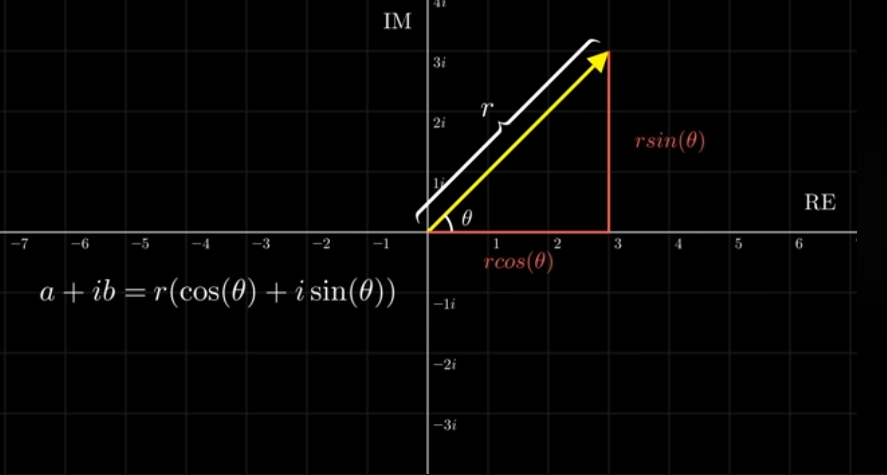
Figure 1: Geometric representation in the complex plane.
Addition: $(a + ib) + (c + id) = (a+c) + i(b+d)$
Multiplication (Cartesian): $(a + bi)(c + di) = (ac - bd) + (ad + bc)i$
Multiplication (Polar): $z_1 \cdot z_2 = (r_1 \cdot r_2)e^{i(\theta_1 + \theta_2)}$ (Note: Angles are added, magnitudes are multiplied)
The Polar form is good to represent the rotation around the cartesian [Real, Img] axis.
Fixing $r$ value results in circular rotation.
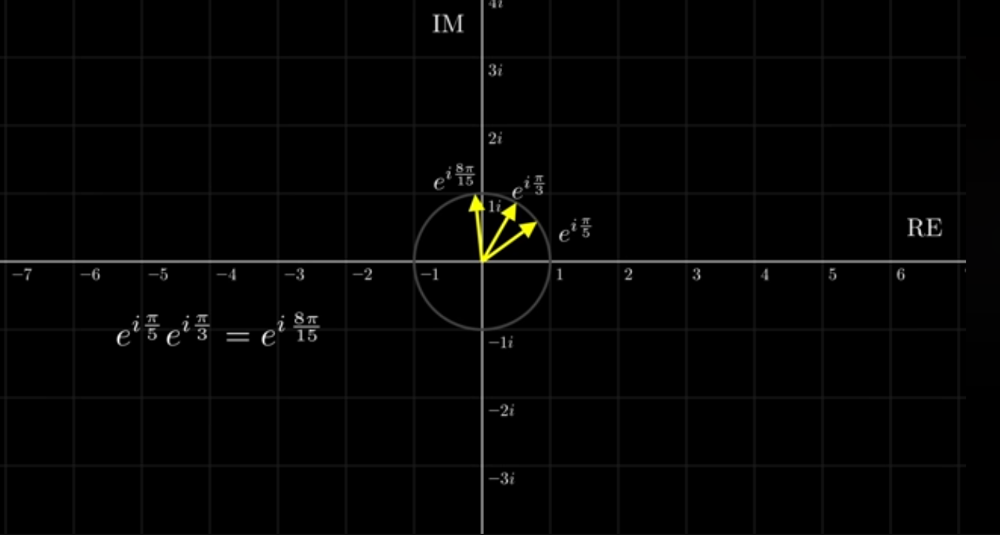
Figure: Geometric representation in the complex plane.
Standard Operations These operations allow us to manipulate quantum gates and state vectors.
| Operation | Notation | Definition/Property |
|---|---|---|
| Inverse | $A^{-1}$ | $A^{-1}A = I$ (Identity Matrix). |
| Transpose | $A^T$ | Swap rows and columns. |
| Conjugate Transpose (Adjoint/Dagger) | $A^\dagger$ | $(A^)^T = (A^T)^ = A^\dagger$ ; Take the complex conjugate of every element and then transpose. |
Example of Conjugate: If we have matrix $A$:
$$A = \begin{bmatrix} 2+3i & 0 \\ 5 & 3-i \end{bmatrix}$$
Then the conjugate $A^*$ is:
$$A^* = \begin{bmatrix} 2-3i & 0 \\ 5 & 3+i \end{bmatrix}$$
Then the transpose of the conjugate $(A^*)^T$ is:
$$A^* = \begin{bmatrix} 2-3i & 5 \\ 0 & 3+i \end{bmatrix}$$
Note: This also could be obtained using transposing the matrix then replacing each element by its complex conjugate.
Special Matrices In Quantum Mechanics, we almost exclusively work with these two types:
| Special Matrix | Definition | Meaning | Role |
|---|---|---|---|
| Unitary Matrix ($U$) | $U^\dagger U = I$. | Any Unitary matrix $U$ is invertible, and its inverse is given by $U^\dagger$ | - They rotate or flip vectors while preserving their magnitude (length). - This is vital for maintaining probabilities in quantum computing; Since the total probability of all possible outcomes must always equal 1, quantum gates must be Unitary. - This ensures that the "length" of the state vector never changes; if you start with 100% probability, you end with 100% probability, even after rotating the vector. |
| Hermitian Matrix ($H$) | $H = H^\dagger$. | Self-Adjoint: Any Hermitian matrix $H$ is equal to its adjoint matrix $H^\dagger$$G$ is Hermitian if $G=G^\dagger$, and as G is unitary then $G^2=I$ | - Diagonal Elements: all elements on the principal diagonal are real numbers.- Eigenvalues: All eigenvalues are strictly real.- Eigenvectors: Eigenvectors corresponding to distinct eigenvalues are orthogonal.- Diagonalization: It's always unitarily diagonalizable. |
Eigenvalues and Eigenvectors When a matrix $A$ acts on an eigenvector $\vec{v}$, the vector stays in the same direction but is scaled by the eigenvalue $\lambda$:
$$A\vec{v} = \lambda\vec{v}$$
Vector Illustration: Imagine a vector $\vec{v}$ being stretched by a factor $\lambda$ without changing its direction.
Vectors and Kets In Quantum Computing, we use Dirac Notation (Bra-Ket notation) [Will be explained in details below]:
Basis and Unit Vectors
Vector Operations
| Classical Computer | Quantum Computer |
|---|---|
| Uses Bits (0s & 1s) | Uses Qubits |
| Either 0 or 1 at any time | Can be 0 and 1 at the same time |
In quantum computers, we define:
We will cover Dirac Notation more explained in further sections below.
Column Vector Representation A qubit $|\psi\rangle$ is represented as:
$$|\psi\rangle = \begin{pmatrix} \alpha \\ \beta \end{pmatrix}$$
When we measure a quantum system, it collapses into the measured state. If we measure a photon in superposition and get "Horizontal," it collapses and becomes horizontally polarized. Measurement results in either 0 or 1.
When measuring $|\psi\rangle = \begin{pmatrix} \alpha \\ \beta \end{pmatrix}$:
So what is the point of $\alpha, \beta$ if we only measure 0 or 1?
Bit is short for binary digit; could be in state '0' or in state '1'. A qbit can be in state $|0\rangle$ or $|1\rangle$. [Called Dirac Notation, where the symbols $| \rangle$ are called Kets]. The states: $|0\rangle, |1\rangle$ are not the only possibilities for the state of a qubit; it could be in a superposition of the form: $a|0\rangle + b|1\rangle$:
Hilbert Space:
Computational Basis: To fix the vectors $|0\rangle$ and $|1\rangle$ as elements of special basis, we refer to as the computational basis. Representing these vectors, constituents of the computational basis, as the column vectors: $|0\rangle = \begin{pmatrix} 1 \\ 0 \end{pmatrix}$, $|1\rangle = \begin{pmatrix} 0 \\ 1\end{pmatrix}$ Hence: $a|0\rangle + b|1\rangle = a\begin{pmatrix} 1 \\ 0 \end{pmatrix} + b\begin{pmatrix} 0 \\ 1 \end{pmatrix} = \begin{pmatrix} a \\ b \end{pmatrix}$.
Working with Quantum mechanics, instead of using matrices, we use Dirac Notation. Dirac Notation Was introduced by Paul Dirac as a compact way to represent vectors in a complex vector space (Hilbert Space).
For an arbitrary qubit state, it can be factored into sum of two matrices:
$$|\psi\rangle = \begin{pmatrix} \alpha \\ \beta\end{pmatrix} = \begin{pmatrix} \alpha \\ 0\end{pmatrix} + \begin{pmatrix} 0 \\ \beta\end{pmatrix} = \alpha\begin{pmatrix} 1 \\ 0\end{pmatrix} + \beta\begin{pmatrix} 0 \\ 1\end{pmatrix} = \alpha|0\rangle + \beta|1\rangle$$
So, a quantum state is defined as: $|\psi\rangle = \alpha |0\rangle + \beta |1\rangle$
Example:
$|\psi\rangle=\begin{pmatrix} \frac{1}{2} \\ \frac{2\sqrt{3}}{4}\end{pmatrix}=\frac{1}{2}|0\rangle + \frac{2\sqrt{3}}{4}|1\rangle$
Note:
We can represent a qubit $|\psi\rangle$ as a point on the surface of the Bloch Sphere
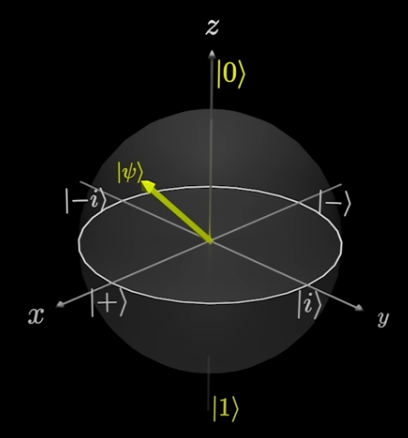
X-axis: $|+\rangle$, $|-\rangle$ states
Y-axis: $|i\rangle$, $|-i\rangle$ states
Z-axis: $|0\rangle$, $|1\rangle$ states
Higher vertically = Higher probability of measuring $|\psi\rangle$ as $|0\rangle$ (north pole)
Lower vertically = Higher probability of measuring $|\psi\rangle$ as $|1\rangle$ (south pole)
Note: a qubit can spin around the sphere; this is called phase
In classical computing, we use logic gates to change the state. In quantum computing, we still have gates that we use to change the Qubit state. These gates are little different that the logic gates.
There three quantum gates: X-Gate, Y-Gate, and Z-Gate
The X-Gate The X-gate flips the Qubit $\pi$ radians around the x-axis on the Bloch Sphere
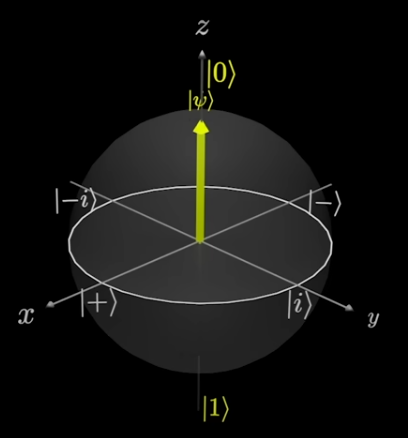
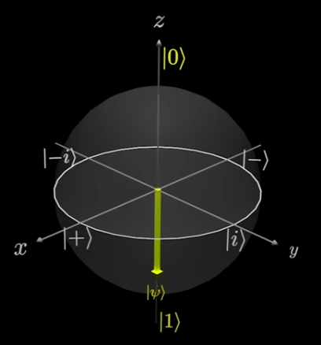
Figure: Example-1 A qubit $|0\rangle$ state -> then applying X-Gate flips -> to $|1\rangle$ state
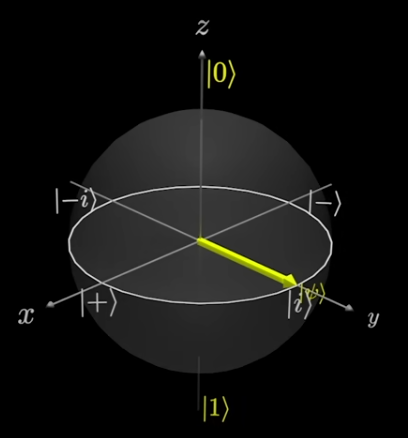
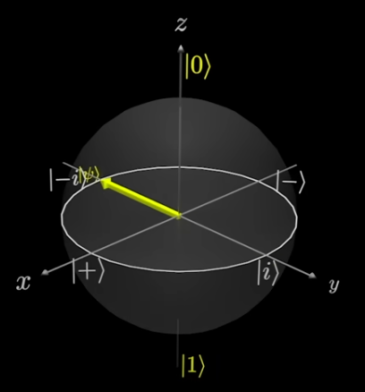
Figure: Example-2 A qubit $|i\rangle$ state -> then applying X-Gate flips -> to $|-i\rangle$ state.
The Y-Gate The Y-gate flips the Qubit $\pi$ radians around the y-axis on the Bloch Sphere
Examples:
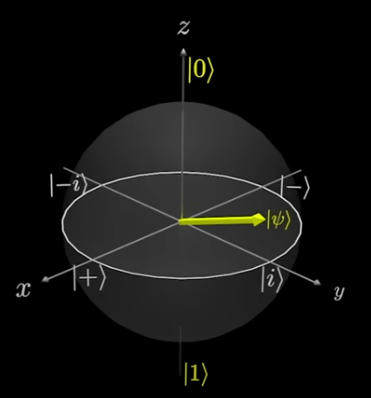
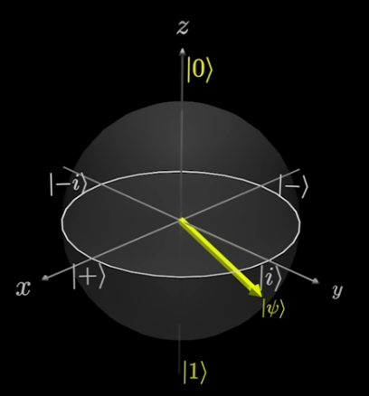
Figure: Example-1
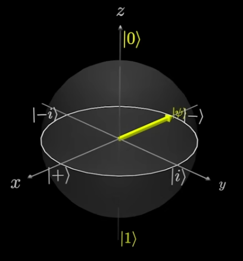
Figure: Example-2
The Z-Gate The Z-gate flips the Qubit $\pi$ radians around the z-axis on the Bloch Sphere
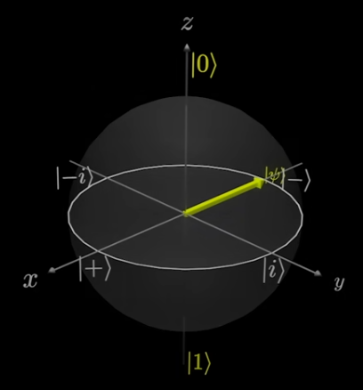
Figure: Example
Observations Since the $X$, $Y$, and $Z$ gates rotate around the specified axis $\pi$ radians. If we apply the same gate twice; we rotate around $2\pi$ radians; meaning the qubit will end up in the original state. ! This means The $X$, $Y$, and $Z$ gates are their own inverses.
Gates Representation These Pauli gate can be represented as matrices.
$X=\begin{pmatrix} 0&1 \\ 1&0 \end{pmatrix}$ $Y=\begin{pmatrix} 0&-i \\ i&0 \end{pmatrix}$ $Z=\begin{pmatrix} 1&0 \\ 0&-1 \end{pmatrix}$
Applying Gates to Qubit Applying $X$ gate to an arbitrary qubit $|\psi\rangle = \begin{pmatrix}\alpha \ \beta \end{pmatrix}$
$$X|\psi\rangle = \begin{pmatrix}0&1\\1&0\end{pmatrix} \begin{pmatrix}\alpha\\beta\end{pmatrix} = \begin{pmatrix}\beta\\alpha\end{pmatrix}$$
Concrete Example: $X|0\rangle = |1\rangle$
$$X|0\rangle = \begin{pmatrix} 0 & 1 \\ 1 & 0 \end{pmatrix} \begin{pmatrix} 1 \\ 0 \end{pmatrix} = \begin{pmatrix} 0 \\ 1 \end{pmatrix} = |1\rangle$$
Dirac Notation Note: Matrix Columns When working in Dirac notation, the columns of an arbitrary gate matrix $U=\begin{pmatrix}a&b \\ c&d\end{pmatrix}$ directly define how the gate transforms the basis states:
$$U|0\rangle=\begin{pmatrix}a\\c\end{pmatrix}=a|0\rangle+c|1\rangle$$
$$U|1\rangle=\begin{pmatrix}b\\d\end{pmatrix}=b|0\rangle+d|1\rangle$$
Linearity Principle Since quantum operations are linear; we can distribute the gate over any arbitrary linear combination:
$$|\psi\rangle=U(\alpha|0\rangle+\beta|1\rangle)=\alpha U|0\rangle+\beta U|1\rangle$$
Worked Examples Example 1: Applying the Y Gate Let $|\psi\rangle=\frac{\sqrt{3}}{2}|0\rangle+\frac{1}{2}|1\rangle$
$$Y|\psi\rangle=\frac{\sqrt{3}}{2} Y|0\rangle + \frac{1}{2} Y|1\rangle$$ $$Y|\psi\rangle=\frac{\sqrt{3}}{2}\begin{pmatrix}0\\i\end{pmatrix}+\frac{1}{2}\begin{pmatrix}-i\\0\end{pmatrix}$$ $$Y|\psi\rangle=\frac{\sqrt{3}}{2}i\begin{pmatrix}0\\1\end{pmatrix} -\frac{1}{2}i\begin{pmatrix}1\\0\end{pmatrix}$$ $$Y|\psi\rangle=\frac{\sqrt{3}}{2}i|1\rangle -\frac{1}{2}i|0\rangle$$
Example 2: Applying the Z Gate Prove: $Z(\alpha|0\rangle+\beta|1\rangle) = \alpha|0\rangle - \beta|1\rangle$
$$Z|\psi\rangle=Z(\alpha|0\rangle+\beta|1\rangle)$$ $$Z|\psi\rangle= \alpha Z|0\rangle + \beta Z|1\rangle$$ $$Z|\psi\rangle=\alpha \begin{pmatrix}1\\0\end{pmatrix} + \beta \begin{pmatrix}0\\-1\end{pmatrix}$$ $$Z|\psi\rangle=\alpha\begin{pmatrix}1\\0\end{pmatrix} + \beta (-1) \begin{pmatrix}0\\1\end{pmatrix}$$ $$Z|\psi\rangle= \alpha|0\rangle - \beta|1\rangle$$
Summary of Gates
| Gate | Operation |
|---|---|
| $X$ | $|0\rangle\xrightarrow{X}|1\rangle$$|1\rangle\xrightarrow{X}|0\rangle$ |
| $Y$ | $|0\rangle\xrightarrow{Y}i|1\rangle$$|1\rangle\xrightarrow{Y}-i|0\rangle$ |
| $Z$ | $|0\rangle\xrightarrow{Z}|0\rangle$$|1\rangle\xrightarrow{Z}-|1\rangle$ |
What is the point of Z gate? it just rotates the qubit around the Z-axis. Also, gives that from previous example, that the qubit still have the same $\alpha$ chances of being zero and $\beta$ chance of being one. This didn't affect the probability! The qubit stays the same distance from zero/one states.
In the further explanation, the complex numbers will be brought here in the quantum computing with introduction to Phase
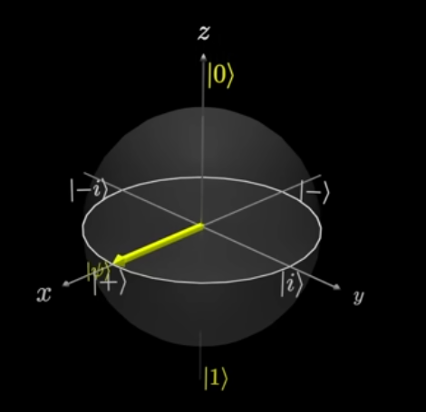
Figure: Rotation around z-axis.
To introduce phase, we must get our friend "Complex numbers". In QC, the complex numbers are usually used in the exponential form; It gives a nice mathematically way in rotating the qubit based on the $\phi$ angle value.
$$|\psi\rangle=\alpha |0\rangle + e^{i\phi}\beta |1\rangle$$
Why The $|1\rangle$ State that Multiply by Complex Number?
| Global Phase | Relative Phase |
|---|---|
| Both states multiplied by a complex number. | Only the one-state is multiplied by a complex number. |
| $e^{i\phi}(\alpha |0\rangle + \beta |1\rangle)$ = $e^{i\phi} \alpha |0\rangle + e^{i\phi} \beta |1\rangle$ | $\alpha |0\rangle + e^{i\phi} \beta |1\rangle$ |
The Global Phase is generally being discarded!!
What If $e^{i\theta} \alpha |0\rangle + e^{i\phi} \beta |1\rangle$ ? Here, we have a complex number in both of amplitude of the two states.
Prove
$$e^{i\theta} \alpha |0\rangle + e^{i\phi} \beta |1\rangle$$
$$e^{i\theta}(\alpha |0\rangle + (e^{i\theta})^{-1} e^{i\phi} \beta |1\rangle) = e^{i\theta}(\alpha |0\rangle + e^{i(\phi - \theta)} \beta |1\rangle)$$
$$\alpha |0\rangle + e^{i(\phi - \theta)} \beta |1\rangle$$
Recall! Phasing Does Not Affect Probability! the qubit still have the same $\alpha$ chances of being zero and $\beta$ chance of being one. This didn't affect the probability! The qubit stays the same distance from zero/one states. It's just rotating around the Z-axix.
So, if we have a Qubit $|\psi\rangle = \alpha|0\rangle + e^{i\phi} \beta|1\rangle$
Each on of the gates contains a relative phase.
States Representation
| State | Representation |
|---|---|
| $|+\rangle$ | $|+\rangle=\frac{1}{\sqrt{2}}|0\rangle+\frac{1}{\sqrt{2}}|1\rangle$ |
| $|-\rangle$ | $|-\rangle=\frac{1}{\sqrt{2}}|0\rangle-\frac{1}{\sqrt{2}}|1\rangle$ |
| $|i\rangle$ | $|i\rangle=\frac{1}{\sqrt{2}}|0\rangle+\frac{i}{\sqrt{2}}|1\rangle$ |
| $|-i\rangle$ | $|-i\rangle=\frac{1}{\sqrt{2}}|0\rangle-\frac{i}{\sqrt{2}}|1\rangle$ |
Note That
The Hadamard Gate Mathematical representation: $H = \frac{1}{\sqrt{2}}\begin{bmatrix}1&1 \\1&-1\end{bmatrix}$
Applying effect of $H$ on the states:
$|0\rangle \xrightarrow{H} |+\rangle$
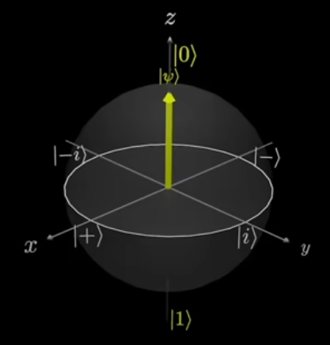
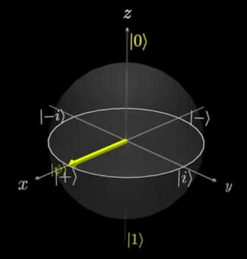
$|1\rangle \xrightarrow{H} |-\rangle$
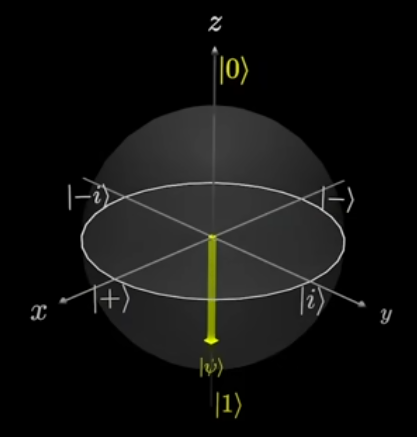
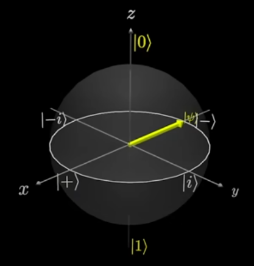
| H Operation |
|---|
| $|0\rangle \xrightarrow{H} |+\rangle$ |
| $|1\rangle \xrightarrow{H} |-\rangle$ |
| $|+\rangle \xrightarrow{H} |0\rangle$ |
| $|-\rangle \xrightarrow{H} |1\rangle$ |
Note
Introduction to a two Phase gates; it adds a relative phase to the $|1\rangle$ state.
| $S$ | $T$ |
|---|---|
| $S=\begin{pmatrix}1&0\\0&e^{i\frac{\pi}{2}}\end{pmatrix}$ | $T=\begin{pmatrix}1&0\\0&e^{i\frac{\pi}{4}}\end{pmatrix}$ |
| $|0\rangle \xrightarrow{S}|0\rangle$ | $|0\rangle \xrightarrow{T}|0\rangle$ |
| $|1\rangle \xrightarrow{S}e^{i\frac{\pi}{2}}|1\rangle$ | $|1\rangle \xrightarrow{T}e^{i\frac{\pi}{4}}|1\rangle$ |
| Adds a relative Phase of $e^{i\frac{\pi}{2}}$ | Adds a relative phase of $e^{i\frac{\pi}{4}}$ |
| $\alpha|0\rangle+\beta|1\rangle\xrightarrow{S}\alpha|0\rangle+e^{i\frac{\pi}{2}}\beta|1\rangle$ | $\alpha|0\rangle+\beta|1\rangle\xrightarrow{T}\alpha|0\rangle+e^{i\frac{\pi}{4}}\beta|1\rangle$ |
| $S^\dagger$ Gate | $T^\dagger$ Gate |
|---|---|
| $S^\dagger = \begin{pmatrix} 1 & 0 \\ 0 & e^{i(-\frac{\pi}{2})} \end{pmatrix}$ | $T^\dagger = \begin{pmatrix} 1 & 0 \\ 0 & e^{i(-\frac{\pi}{4})} \end{pmatrix}$ |
| Adds a relative phase of $e^{i(-\frac{\pi}{2})}$ | Adds a relative phase of $e^{i(-\frac{\pi}{4})}$ |
| $S(\alpha|0\rangle + \beta|1\rangle) = \alpha|0\rangle + e^{i\frac{\pi}{2}}\beta|1\rangle$ | |
| $S^\dagger(\alpha|0\rangle + e^{i\frac{\pi}{2}}\beta|1\rangle)$ | |
| $= \alpha|0\rangle + e^{i(-\frac{\pi}{2})} e^{i\frac{\pi}{2}} \beta|1\rangle$ | |
| $= \alpha|0\rangle + e^{i(0)} \beta|1\rangle$ | |
| $= \alpha|0\rangle + \beta|1\rangle$ |
Rotation Gates $(R_x, R_y, R_z)$ allow us to move a state to any point on the Bloch sphere.
We define the following rotation gates:
$$R_X(\theta) = e^{-i\frac{\theta}{2}X} = \cos \frac{\theta}{2}I - i \sin \frac{\theta}{2}X = \begin{pmatrix} \cos \frac{\theta}{2} & -i \sin \frac{\theta}{2} \ -i \sin \frac{\theta}{2} & \cos \frac{\theta}{2} \end{pmatrix}$$
$$ R_Y(\theta) = e^{-i\frac{\theta}{2}Y} = \cos \frac{\theta}{2}I - i \sin \frac{\theta}{2}Y = \begin{pmatrix} \cos \frac{\theta}{2} & -\sin \frac{\theta}{2} \ \sin \frac{\theta}{2} & \cos \frac{\theta}{2} \end{pmatrix} $$
$$ R_Z(\theta) = e^{-i\frac{\theta}{2}Z} = \cos \frac{\theta}{2}I - i \sin \frac{\theta}{2}Z = \begin{pmatrix} e^{-i\frac{\theta}{2}} & 0 \ 0 & e^{i\frac{\theta}{2}} \end{pmatrix} \equiv \begin{pmatrix} 1 & 0 \ 0 & e^{i\theta} \end{pmatrix} $$
Note:
The symbol $\equiv$ represents an equivalent action up to a global phase.
The rotation gates definition derivated is explained below.
Notable Equivalences Notice the following specific rotation results:
Note: Notice how the $R_z$ gate is equivalent to the $S$ and $T$ phase gates at specifc angles; this shows that "Phase" is essentially just a rotation around the Z-axis of the sphere.
Geometric Interpretation
Rotation matrices can be interpreted geometrically by introducing the so-called Bloch sphere. In fact, for any gate $G$, if $G$ is Hermitian, we have:
$$R_G = e^{-i\frac{\theta}{2}G} = \cos \frac{\theta}{2}I - i \sin \frac{\theta}{2}G$$
The Definition Derivitive Let's explore how the above rotation gate defition was get:
$$R_x(\theta)=\cos\frac{\theta}{2}I-i\sin\frac{\theta}{2}X$$ $$R_x(\theta)=\cos\frac{\theta}{2} . \begin{pmatrix}1&0\\0&1\end{pmatrix}-i\sin\frac{\theta}{2} . \begin{pmatrix}0&1\\1&0\end{pmatrix}$$ $$R_x(\theta)=\begin{pmatrix}\cos\frac{\theta}{2} & 0 \\0&\cos\frac{\theta}{2} \end{pmatrix}+\begin{pmatrix}0&-i\sin\frac{\theta}{2}\\-i\sin\frac{\theta}{2}&0\end{pmatrix}$$ $$R_x(\theta)=\begin{pmatrix}\cos\frac{\theta}{2} &-i\sin\frac{\theta}{2} \\ -i\sin\frac{\theta}{2}&\cos\frac{\theta}{2}\end{pmatrix}$$ $$R_x(\pi)=\begin{pmatrix}\cos\frac{\pi}{2} &-i\sin\frac{\pi}{2} \\ -i\sin\frac{\pi}{2}&\cos\frac{\pi}{2}\end{pmatrix}=\begin{pmatrix}0&-i(i)\\-i(i)&0\end{pmatrix}=\begin{pmatrix}0&1\\1&0\end{pmatrix}=X$$
$$R_y(\theta)=\cos\frac{\theta}{2}I-i\sin\frac{\theta}{2}Y$$ $$R_y(\theta)=\cos\frac{\theta}{2} . \begin{pmatrix}1&0\\0&1\end{pmatrix}-i\sin\frac{\theta}{2} . \begin{pmatrix}0&-i\\i&0\end{pmatrix}$$ $$R_y(\theta)=\begin{pmatrix}\cos\frac{\theta}{2} & 0 \\0&\cos\frac{\theta}{2} \end{pmatrix}+\begin{pmatrix}0&-\sin\frac{\theta}{2}\\\sin\frac{\theta}{2}&0\end{pmatrix}$$ $$R_y(\theta)=\begin{pmatrix}\cos\frac{\theta}{2} &-\sin\frac{\theta}{2} \\ \sin\frac{\theta}{2}&\cos\frac{\theta}{2}\end{pmatrix}$$ $$R_y(\pi)=\begin{pmatrix}\cos\frac{\pi}{2} &-\sin\frac{\pi}{2} \\ \sin\frac{\pi}{2}&\cos\frac{\pi}{2}\end{pmatrix}=\begin{pmatrix}0&-i\\i&0\end{pmatrix}=Y$$
$$R_z(\theta)=\cos\frac{\theta}{2}I-i\sin\frac{\theta}{2}Z$$ $$R_z(\theta)=\cos\frac{\theta}{2} . \begin{pmatrix}1&0\\0&1\end{pmatrix}-i\sin\frac{\theta}{2} . \begin{pmatrix}1&0\\0&-1\end{pmatrix}$$ $$R_z(\theta)=\begin{pmatrix}\cos\frac{\theta}{2} & 0 \\0&\cos\frac{\theta}{2} \end{pmatrix}+\begin{pmatrix}-i\sin\frac{\theta}{2}&0\\0&i\sin\frac{\theta}{2}\end{pmatrix}$$ $$R_z(\theta)=\begin{pmatrix}\cos\frac{\theta}{2}-i\sin\frac{\theta}{2} &0 \\ 0&\cos\frac{\theta}{2}+i\sin\frac{\theta}{2}\end{pmatrix}$$ $$R_z(\theta)=\begin{pmatrix}e^{-i\frac{\theta}{2}}&0\\0&e^{i\frac{\theta}{2}}\end{pmatrix}$$ $$R_z(\pi)=\begin{pmatrix}e^{-i\frac{\pi}{2}}&0\\0&e^{i\frac{\pi}{2}}\end{pmatrix}=\begin{pmatrix}\cos\frac{\pi}{2}-i\sin\frac{\pi}{2}&0\\0&\cos\frac{\pi}{2}+i\sin\frac{\pi}{2}\end{pmatrix}=\begin{pmatrix}0-i(i)&0\\0&0+i(i)\end{pmatrix}=\begin{pmatrix}1&0\\0&-1\end{pmatrix}=Z$$
We represent multiple qubits wiht Tensor Product $\otimes$
For example, if we have two qubits in state $|0\rangle$, this is reprenented with $\otimes$ and it's shortened to this $|00\rangle$ (Two zeros in the one Kit vector).
$$|0\rangle \otimes|0\rangle = |00\rangle$$
If we have a two arbitrary qubit, and want to represent them in superposition:
$$(\alpha|0\rangle + \beta|1\rangle)\ \otimes\ (\gamma|0\rangle + \delta|1\rangle)$$
$$= \alpha|0\rangle \otimes \gamma|0\rangle + \alpha|0\rangle \otimes \delta|1\rangle + \beta|1\rangle \otimes \gamma|0\rangle + \beta|1\rangle \otimes \delta|1\rangle$$
$$= \alpha\gamma |0\rangle \otimes |0\rangle+ \alpha\delta |0\rangle \otimes |1\rangle+ \beta\gamma |1\rangle \otimes |0\rangle+ \beta\delta |1\rangle \otimes |1\rangle$$
$$= \alpha\gamma |00\rangle + \alpha\delta |01\rangle + \beta\gamma |10\rangle + \beta\delta |11\rangle$$
Now, we have 4 states since these are all the possible combination of having two qubits.
Short Hand Notation: for applying multiple qubit
$$|0000...0\rangle=|0\rangle^{\otimes n}$$
$$|1\rangle^{\otimes 5}=|11111\rangle$$
They are unitary transformations represented by unitary matrices In case we have a triple qubit like $|001\rangle$, how can we apply a X-Gate on the second qubit? For this we use a quantum diagram called quantum circuits.
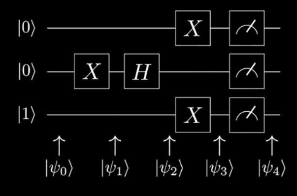
Each line represents a singular qubit.
The states on the Left represent the initial states of the Qubits.
The boxes are the quantum gates, and the letters on the boxes are the type of gate we're applying.
The boxes on the right are the measurment boxes.
The horizontal views shows the order which we apply the gates.
The horizontal $|\psi_n\rangle$ represents the state of the system at different points during the Algorithm.
Here are the states at each point in the circuts:
| State | Operation | Output |
|---|---|---|
| $|\psi_0\rangle$ | $|001\rangle$ | |
| $|\psi_1\rangle$ | Apply $X$-gate on the 2nd Qubit | $|011\rangle$ |
| $|\psi_2\rangle$ | Apply $H$-gate on the 2nd Qubit | $|0-1\rangle$$|0\rangle\otimes\frac{1}{\sqrt{2}}(|0\rangle-|1\rangle)\otimes|1\rangle$$\frac{1}{\sqrt{2}}(|001\rangle-|011\rangle)$ |
| $|\psi_3\rangle$ | Apply $X$ gates to both 1st and 3rd qubits | $\frac{1}{\sqrt{2}}(|100\rangle-|110\rangle)$ |
| $|\psi_4\rangle$ | Measuring the Qubits | Will be $|100\rangle \frac{1}{2}$ of the time, and $|110\rangle \frac{1}{2}$ of the time. |
Note: In the above quantum circuits, some books put a double line "$=$" instead of single line "$-$" after the measurement box; to indicate a classical value is measured as double line holds classical value, while a single line holds a quantum value.
The CNOT gate applies an $X$ gate to the target qubit, if the Control qubit is a 1
Example: The 1st qubit is the control, 2nd qubit is the target.
$CNOT(\frac{\sqrt{3}}{4}|00\rangle)+\frac{1}{2}|01\rangle+\frac{1}{\sqrt{2}}|10\rangle+\frac{1}{4}|11\rangle)$
= $\frac{\sqrt{3}}{4}CNOT|00\rangle+\frac{1}{2}CNOT|01\rangle+\frac{1}{\sqrt{2}}CNOT|10\rangle+\frac{1}{4}CNOT|11\rangle$
= $\frac{\sqrt{3}}{4}|00\rangle+\frac{1}{2}|01\rangle+\frac{1}{\sqrt{2}}|11\rangle+\frac{1}{\sqrt{2}}|10\rangle$
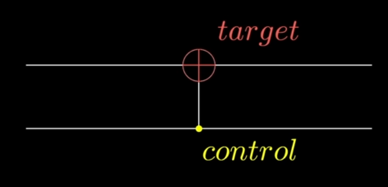
Figure: CNOT Gate.
Same as CNOT but has 2 Control Qubits.
Example: The 2nd, 3rd qubits are the control, 4th qubit is the target.
$TOFFOLI(\frac{1}{\sqrt{2}}|0011\rangle+\frac{1}{\sqrt{2}}|0110\rangle)$
= $\frac{1}{\sqrt{2}}TOFFOLI|0011\rangle+\frac{1}{\sqrt{2}}TOFFOLI|0110\rangle$
= $\frac{1}{\sqrt{2}}|0011\rangle+\frac{1}{\sqrt{2}}|0111\rangle$
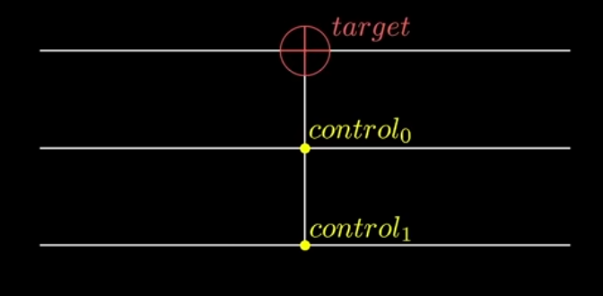
Figure: Toffolie Gate.
There are also other controlled gates like: $CY, CZ, CS, CT, CH, ..$; it odes the same that it applies the gate to the target qubit is the control qubit is a 1
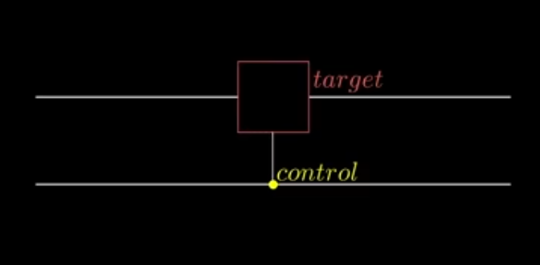
Figure: Controlled Gate
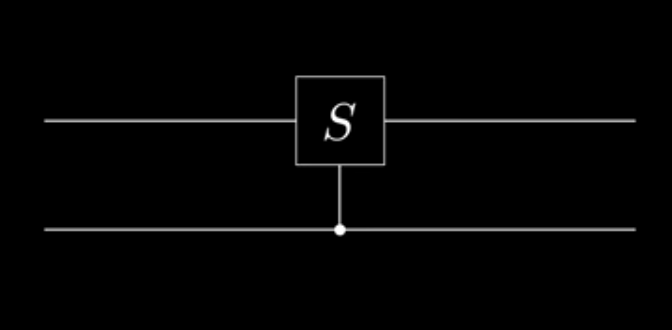
Figure: S Gate as example
Theories explain; Models represent and apply.
Measurements reveals properties!!
The inner product between two states is written as: $\langle\phi|\psi\rangle$
[TO DO] Continue understand the inner product meaning.
An Example:


prove:

$H|u\rangle = \frac{1}{\sqrt{2}} \sum_{y=0}^{1} (-1)^{uy} |y\rangle$
Why is this formula preferred in QML?
While the ∣0⟩±∣1⟩ notation is more intuitive, this summation form is the "workhorse" of Quantum Machine Learning and Quantum Algorithms for two reasons:
Generalization: It scales beautifully. For n qubits, the formula becomes H⊗n∣u⟩=2n1∑y∈{0,1}n(−1)u⋅y∣y⟩. This is the Walsh-Hadamard Transform, used to create a uniform superposition of all possible states simultaneously—the ultimate "parallel processing" step in quantum computing.
Phase Encoding: In QML, we often use the (−1)uy term to encode data into the "phase" of the quantum state. This allows us to perform interference patterns that highlight certain data features while canceling out noise.
In QML, a cost funciton tells us how 'well' our quantum circuit is performing relative to an objective. It is almost always defined as the expectation value of a measurement operator (obeservable) $\hat{O}$ for the final state of the circuit $|\psi \rangle$: $$C(\theta)=\langle\psi(\theta)|\hat{O}|\psi(\theta)\rangle$$
In most of the problem it's defined as $C(\theta_1,\theta_2)=\langle\psi_f|\hat{O}|\psi_f\rangle$, where:
| Component | Role |
|---|---|
| Variational Form (PQC) | This is the sequence of gates with tunable parameters ($\theta_1, \theta_2$).By changing these angles, we train the circuit to minimize the cost function. |
| Rotation Gates ($R_y$) | These move the qubit state along the Y-axis of the Bloch sphere. |
| Measurement Operator ($\hat{O}=Z\otimes X$) | This is the specific physical property we are measuring.It asks: "is the first qubit aligned with the Z-axis, and is the second qubit aligned with the X-axis?" |
A two-qubit QNN takes the input PQC $|00\rangle$. Apply rotation gates $R_y(\theta_1)$ on qubit 1, $R_y(\theta_2)$ on qubit 2, then a CNOT (control: qubit 1, target: qubit 2). the cost function operator is $\hat{O}=Z\otimes X$
1. Calculating final state from the Circuit:
$\because I=diag(1,1), Y=\begin{pmatrix}0&-i \\ i&0\end{pmatrix}$
$\because R_y(\theta)=e^{-i\frac{\theta}{2}y}=\cos(\frac{\theta}{2})I-i\sin(\frac{\theta}{w})Y=diag(\cos(\frac{\theta}{2}),\cos(\frac{\theta}{2}))+\begin{pmatrix}0&-\sin(\frac{\theta}{2})\\\sin(\frac{\theta}{2}))&0\end{pmatrix}=\begin{pmatrix}\cos\frac{\theta}{2}&-\sin\frac{\theta}{2}\\\sin\frac{\theta}{2}&\cos\frac{\theta}{2}\end{pmatrix}$
Applying to $|0\rangle$:
$R_y(\theta_1)|0\rangle=\begin{pmatrix}\cos\frac{\theta_1}{2}\\\sin\frac{\theta_1}{2}\end{pmatrix}=\cos\frac{\theta_1}{2}|0\rangle+\sin\frac{\theta_1}{2}|1\rangle$ $R_y(\theta_2)|0\rangle=\begin{pmatrix}\cos\frac{\theta_2}{2}\\\sin\frac{\theta_2}{2}\end{pmatrix}=\cos\frac{\theta_2}{2}|0\rangle+\sin\frac{\theta_2}{2}|1\rangle$
The combined state $|\psi_1\rangle$ is:
$\therefore|\psi_1\rangle=R_y(\theta_1)\otimes R_y(\theta_2)=\cos\frac{\theta_1}{2}\cos\frac{\theta_2}{2}|00\rangle+\cos\frac{\theta_1}{2}\sin\frac{\theta_2}{2}|01\rangle+\sin\frac{\theta_1}{2}\cos\frac{\theta_2}{2}|10\rangle+\sin\frac{\theta_1}{2}\sin\frac{\theta_2}{2}|11\rangle$
Applying the CNOT (control: qubit 1, target: qubit 2):
$\therefore|\psi_f\rangle=R_y(\theta_1)\otimes R_y(\theta_2)=\cos\frac{\theta_1}{2}\cos\frac{\theta_2}{2}|00\rangle+\cos\frac{\theta_1}{2}\sin\frac{\theta_2}{2}|01\rangle+\sin\frac{\theta_1}{2}\cos\frac{\theta_2}{2}|11\rangle+\sin\frac{\theta_1}{2}\sin\frac{\theta_2}{2}|10\rangle$
2. Calculating the $Z\otimes X$: Think of $(Z \otimes X)$ as a set of transformation rules applied to each component of our state $|\psi_f\rangle$. Based on the definitions of the Pauli matrices:
We apply these rules to each basis state in $|\psi_f\rangle$:
$$(Z \otimes X) |\psi_f\rangle = \cos\frac{\theta_1}{2}\cos\frac{\theta_2}{2}|01\rangle + \cos\frac{\theta_1}{2}\sin\frac{\theta_2}{2}|00\rangle - \sin\frac{\theta_1}{2}\cos\frac{\theta_2}{2}|10\rangle - \sin\frac{\theta_1}{2}\sin\frac{\theta_2}{2}|11\rangle$$
3. Calculate the Inner Product $\langle\psi_f|(...)\rangle$
| Basis State | Original Coeff (from $|\psi_f\rangle$) | Transformed Coeff (from $\hat{O}|\psi_f\rangle$) | Product |
|---|---|---|---|
| $|00\rangle$ | $\cos\frac{\theta_1}{2}\cos\frac{\theta_2}{2}$ | $\cos\frac{\theta_1}{2}\sin\frac{\theta_2}{2}$ | $\cos^2\frac{\theta_1}{2} \cdot \cos\frac{\theta_2}{2}\sin\frac{\theta_2}{2}$ |
| $|01\rangle$ | $\cos\frac{\theta_1}{2}\sin\frac{\theta_2}{2}$ | $\cos\frac{\theta_1}{2}\cos\frac{\theta_2}{2}$ | $\cos^2\frac{\theta_1}{2} \cdot \sin\frac{\theta_2}{2}\cos\frac{\theta_2}{2}$ |
| $|10\rangle$ | $\sin\frac{\theta_1}{2}\sin\frac{\theta_2}{2}$ | $-\sin\frac{\theta_1}{2}\cos\frac{\theta_2}{2}$ | $-\sin^2\frac{\theta_1}{2} \cdot \sin\frac{\theta_2}{2}\cos\frac{\theta_2}{2}$ |
| $|11\rangle$ | $\sin\frac{\theta_1}{2}\cos\frac{\theta_2}{2}$ | $-\sin\frac{\theta_1}{2}\sin\frac{\theta_2}{2}$ | $-\sin^2\frac{\theta_1}{2} \cdot \cos\frac{\theta_2}{2}\sin\frac{\theta_2}{2}$ |
Summing these up: $\therefore C = 2 \cos^2\frac{\theta_1}{2} \left( \sin\frac{\theta_2}{2}\cos\frac{\theta_2}{2} \right) - 2 \sin^2\frac{\theta_1}{2} \left( \sin\frac{\theta_2}{2}\cos\frac{\theta_2}{2} \right)$ $\therefore C = \left( 2 \sin\frac{\theta_2}{2}\cos\frac{\theta_2}{2} \right) \left( \cos^2\frac{\theta_1}{2} - \sin^2\frac{\theta_1}{2} \right)$ $\therefore C(\theta_1, \theta_2) = \sin(\theta_2) \cos(\theta_1)$
The set of {I, X, Y, Z} known as the set of Pauli Matrices.
| State | Definitions | Operations | C-Gates | |||||||||||||||||||||||||||||||||||||||||||||||||||||||||||||||||||||||||||||||
|---|---|---|---|---|---|---|---|---|---|---|---|---|---|---|---|---|---|---|---|---|---|---|---|---|---|---|---|---|---|---|---|---|---|---|---|---|---|---|---|---|---|---|---|---|---|---|---|---|---|---|---|---|---|---|---|---|---|---|---|---|---|---|---|---|---|---|---|---|---|---|---|---|---|---|---|---|---|---|---|---|---|---|
|
|
|
|
Rules Maths Recall $$e^{i\theta}=\cos\theta+i\sin\theta$$ $$e^{-i\theta}=\cos\theta-i\sin\theta$$ $$\sin\theta = 2\sin\frac{\theta}{2}\cos\frac{\theta}{2}$$ $$\cos\theta = \cos^2\frac{\theta}{2} - \sin^2\frac{\theta}{2}$$
Note: In quantum mechanics, we follow the math from right to left (order of application).
Tesnor Product To find the operator for a two-quibt system, we calculate the tensor product: $Z\otimes I = \begin{pmatrix}1&0\\0&-1\end{pmatrix} \otimes \begin{pmatrix}1&0\\0&1\end{pmatrix}==\begin{pmatrix}1\begin{pmatrix}1&0\\0&1\end{pmatrix}&0\\0&-1\begin{pmatrix}1&0\\0&1\end{pmatrix}\end{pmatrix}=\begin{pmatrix}1&0&0&0\\0&1&0&0\\0&0&-1&0\\0&0&0&-1\end{pmatrix}=diag(1,1,-1,-1)$
Rotation State General rule $$R_G = e^{-i\frac{\theta}{2}G} = \cos \frac{\theta}{2}I - i \sin \frac{\theta}{2}G$$
To calculate: $e^{i\varphi Z\otimes I} = diag(e^{i\varphi}, e^{i\varphi}, e^{-i\varphi}, e^{-i\varphi})$
The CNOT "Sandwich"
Steps to Deduce the Diagonal Value for $|00\rangle$ in operator $e^{ix_1Z\otimes I}$
Describe the quantum circuit of the ZZFeatureMap on 2 qubits and show that it is given by $U(x)H^{\otimes 2}$
Note: the mentioned angles above were the double! {$2x_1, 2x_2, 2x_1x_2$}, as in the rotation gate rule: $R(\theta)=e^{-i\frac{\theta}{2}}$